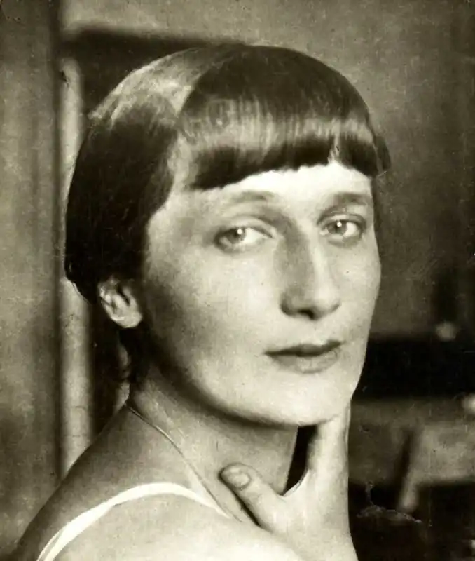

Анна Ахматова
(1889 — 1966)
Одна з найбільш талановитих поеток Срібного століття Анна Ахматова прожила довге, насичене як яскравими моментами, так і трагічними подіями життя. Вона тричі побувала у шлюбі, однак щастя ні в одному шлюбі не зазнала. Вона була свідком двох світових воєн, протягом кожного з яких мала небувалий творчий підйом. У неї були складні стосунки з сином, який став політичним репрессантом, і до кінця життя поетеси вважав, що та вирішила творчість любові до нього… Анна Андрєєва Горенко (таке справжнє прізвище поетеси) народилася 11 (23 червня по старому стилю) 1889 року в Одесі. Її батько, Андрій Антонович Горенко був відставним капітаном другого рангу, після закінчення морської служби отримав чин колезького асесора. Мати поетеси, Інна Стогова, була інтелігентною, начитаною жінкою, яка водила дружбу з представниками творчої еліти Одеси. Втім, про "перлину біля моря" у Ахматової не залишиться дитячих спогадів – коли їй виповнився рік, родина Горенко перебралося в Царське Село під Петербургом. З дитинства Ганну навчали французької мови і світському етикету, що було звичним для будь-якої дівчини з інтелігентної родини. Освіта Анна отримала в Царськосельській жіночої гімназії, там же вона познайомилася зі своїм першим чоловіком Миколою Гумільовим і написала перші вірші. Зустрівши Анну на одному з урочистих вечорів у гімназії, Гумільов був зачарований нею і з тих пір тендітна темноволоса дівчина стала постійною музою його творчості. Перший свій вірш Ахматова написала в 11 років і після цього стала активно удосконалюватися в мистецтві віршування. Батько поетеси вважав це заняття несерйозним, тому заборонив їй підписувати свої творіння прізвищем Горенко. Тоді Ганна взяла дівоче прізвище своєї прабабусі – Ахматова. Втім, дуже скоро батько зовсім перестав впливати на її творчість – батьки розлучилися, і Ганна з матір'ю переїхали спочатку в Євпаторії, потім – у Київ, де з 1908 по 1910 рік поетеса навчалася в Київській жіночій гімназії. У 1910 Ахматова вийшла заміж за свого давнього шанувальника Гумільова. Микола Степанович, який вже тоді був доволі відомою особою в поетичних колах, посприяв публікації поетичних напрацювань подружжя. Перші вірші Ахматової почали друкуватися в різних виданнях з 1911 року, а в 1912 року вийшов її перший повноцінний поетична збірка "Вечір". У 1912 році Анна народила сина Лева, а в 1914 до неї прийшла популярність – збірки "Чотки" отримав хороші відгуки критиків, Ахматова стала вважатися модним поетесою. Протекція Гумільова до того часу перестає бути необхідної, і у відносинах подружжя настає розлад. У 1918 році Ахматова розлучилася з Гумільовим і вийшла заміж за поета і вченого Володимира Шилейко. Втім, і цей шлюб був недовгим – в 1922 році поетеса розвелася й із ним, щоб через півроку поєднуватися шлюбом з мистецтвознавцем Миколою Пуніна. Парадокс: згодом Пунін буде заарештований практично в один час з сином Ахматової – Левом, однак Пуніна звільнять, а Лев піде по етапу. Перший чоловік Ахматової, Микола Гумільов, до того часу буде вже мертвий: його розстріляють в серпні 1921. Останній опублікований збірник Ганни Андріївни датується 1924 роком. Після цього її поезія потрапляє в поле зору НКВС, як "провокаційна і антикомуністична". Поетеса важко переживає неможливість публікуватися, багато пише "в стіл", мотиви її поезії змінюються з романтичних на соціальні. Після арешту чоловіка і сина Ахматова починає роботу над поемою "Реквієм". "Паливом" для творчого шаленства стали неймовірні душу переживання за рідних людей. Поетеса прекрасно розуміла, що за нинішньої влади це творіння ніколи не побачить світ, і, щоб хоч якось нагадати про себе читачам, Ахматова пише ряд "стерильних" з точки зору ідеології віршів, які разом з отцензуренными старими віршами складають збірку "З шести книг", що вийшов в 1940 році. Всю Другу світову війну Ахматова провела в тилу, в Ташкенті. Практично відразу після падіння Берліна поетеса повернулася до Москви. Однак там вона вже давно не вважалася "модною" поетесою: у 1946 році її творчість розкритикували на засіданні Спілки письменників, і незабаром Ахматова була виключена з ССП. Незабаром на Ганну Андріївну чекає ще один удар: вторинний арешт Льва Гумільова. Вдруге синові поетеси присудили десять років таборів. Все це час Ахматова намагалася витягнути його, строчила прохання в Політбюро, однак ніхто до них не дослухався. Сам Лев Гумільов, нічого не знаючи про намаганнях матері, вирішив, що вона не доклала достатньо зусиль, щоб допомогти йому, тому після звільнення віддалився від неї. У 1951 році Ахматову поновили в Спілці радянських письменників і вона поступово повертається до активної творчої праці. У 1964 році їй була присуджена престижна італійська літературна премія "Етна-Торіна" і їй дозволяють отримати її, оскільки часи тотальних репресій пройшли, і Ахматова перестала вважатися антикомуністичної поетесою. У 1958 році виходить збірка "Вірші", в 1965 – "Біг часу". Тоді ж, в 1965 році, за рік до своєї смерті, Ахматова отримує докторську ступінь Оксфордського університету. Ганна Андріївна Ахматова померла 5 березня 1966 року в підмосковному Домодєдово.